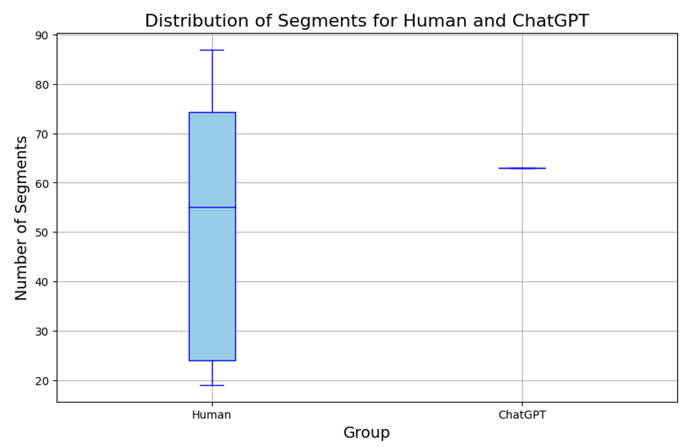

This thesis aims to conduct a comparative analysis of the human and AI capability in understanding Virginia Woolf’s work “To the Lighthouse”, with the goal of assessing the machine’s ability to segment text and analyze emotions in the novel. Specifically, in the first task, we ask a large language model (ChatGPT-4) and a group of human readers to segment the first chapter of the novel. In the second task, we ask instead to assess the emotional perception conveyed by three different passages of the novel, considering a spectrum of six different emotions. In particular, we found that ChatGPT- 4 aligns more with STEM-background persons in terms of segmentation capabilities, while people from humanities adopt a segmentation approach that is more adherent to the editorial structure of the text. In the Emotion Analysis, the results obtained show a high correlation between the two samples, with no substantial differences between the male and female participants; though notable differences arise in its emphasis on subtle emotions, such as sadness and fear, where the model tends to amplify symbolic and descriptive elements compared to human readers. Finally, we include a navigable web resource that showcases visualizations of the emotional analysis conducted by ChatGPT-4. This platform traces the emotional evolution of the characters in the text and identifies key emotional dynamics at specific narrative moments, enabling an in-depth exploration of the potential of AI as an assistant for literary analysis.
The sample includes 14 participants aged 24-30, all with master’s degrees and from the Veneto region. We divided the group into humanists, i.e., those who studied in classical fields (such as literature and law), and non-humanists, from scientific-economic fields (economics, engineering). In addition, we included a comparison with the segmentation performed by GPT-4 (ChatGPT), to analyze whether and how an artificial intelligence model differed from human judgments in the perception of narrative events; and the BOOK, i.e., the original paragraph of the first chapter of to the lighthouse in books.
| Group | Segmentations |
|---|---|
| Humanist (H) | 20, 19, 21, 30, 19, 54 |
| Non-Humanist (NH) | 86, 79, 69, 57, 77, 68, 49, 87 |
| Book (B) | 28 (original paragraph divisions) |
| GPT-4 | 63 |
During the analysis phase of the segmentations from the first chapter of To the Lighthouse, I used Excel to create a dataset containing binary information about the segmentations identified by participants. This dataset was then processed using various Python libraries to create visualizations. Python libraries used: pandas, matplotlib, numpy, seaborn.
In the first chapter of To the Lighthouse, we conducted an in-depth analysis, dividing the text into individual sentences and segmenting it into a total of 341 lines. Each participant analyzed the text, inserting a segmentation bar where they thought a significant event ended. We then numbered the identified lines for each participant and converted the data to binary numbers (0 if no segmentation, 1 if the sample segmented into that line). This conversion facilitated the graphical representation and classification of segmentations, allowing clear visualization of differences.

Then we continued the analysis by calculating Hamming Distance, a measure commonly used in text segmentation studies to assess similarity between segments (Michelmann et al., 2023). This measure is concerned with analyzing the dissimilarity between two binary sequences (sequences composed of only “0”s and “1”s); by counting how many positions differ between the two vectors. This value thus indicates how similar or different the detected segment boundaries are relative to the reference profile, considering not only the shared segmentation points but also the positions where the boundaries differ (including the “0”s). For example, out of a total of 100 positions (341 in our case), if the two vectors (human and GPT-4 samples) differ in 10 positions, the Hamming Distance would be 10/100 = 0.1. This indicates that 10% of the positions are different between the two vectors. In the case of the first human sample, presented in Table 3 below, with a total of 341 positions (rows in the first chapter), a Hamming Distance of 0.070 indicates that 7% of the positions differ from the book’s segmentation model, corresponding to 24/341. The greater the distance, the greater the dissimilarity between the segmentations compared to the original structure. Second, we calculated the Jaccard Distance, a statistical metric commonly used to measure the dissimilarity between two binary sets. The Jaccard Distance evaluates the agreement of segmentation points (where both vectors have a “1”) only at the points in common, without considering the positions where they differ. For example, in the case of the first human sample, which shows a dissimilarity of 7% according to Hamming Distance (thus a similarity of 93% with the segmentation provided by the editorial text), Jaccard’s Distance indicates a 66.6% dissimilarity. This means that 33.4% of the segmentation points (positions with a “1”) are shared between the two vectors. Consequently, the Hamming Distance is effective in assessing the overall global dissimilarity, while the Jaccard Distance is more specific in evaluating the shared segmentation points.
| HUMANS | HAMMING'S DISTANCE | JACCARD'S DISTANCE |
|---|---|---|
| H1: HUMANIST | 0.070 (93%) | 0.666 (33.4%) |
| H2: HUMANIST | 0.073 (92.7%) | 0.675 (32.5%) |
| H3: NON HUMANIST | 0.202 (79.8%) | 0.758 (24.2%) |
| H4: NON HUMANIST | 0.170 (83%) | 0.707 (29.3%) |
| H5: NON HUMANIST | 0.143 (85.7%) | 0.671 (32.9%) |
| H6: HUMANIST | 0.035 (96.5%) | 0.387 (61.3%) |
| H7: HUMANIST | 0.093 (90.7%) | 0.711 (28.9%) |
| H8: NON HUMANIST | 0.114 (88.6%) | 0.629 (37.1%) |
| H9: HUMANIST | 0.073 (92.7%) | 0.694 (30.6%) |
| H10: NON HUMANIST | 0.158 (84.2%) | 0.683 (31.7%) |
| H11: NON HUMANIST | 0.146 (85.4%) | 0.684 (31.6%) |
| H12: NON HUMANIST | 0.111 (88.9%) | 0.666 (33.4%) |
| H13: NON HUMANIST | 0.178 (82.2%) | 0.693 (30.7%) |
| H14: HUMANIST | 0.137 (86.3%) | 0.734 (26.6%) |
Tab. 3: Comparison of Humanists and Non-Humanists vs Editorial Segmentation.
LIMITATIONS This study presents some important limitations to consider; the sample size is relatively small, consisting of only 14 participants. This limited number stems from logistical and practical challenges in recruiting individuals for a task that goes beyond a simple questionnaire. Another limitation might relate to the demographic composition of the participants; as they all come from the same region (Veneto), are between 24 and 30 years old. This homogeneity may influence the results, reducing the variability of responses due to the overly specific. To improve this research, it would be of interest to include more varied samples, allowing us to explore the impacts of these variables through textual segmentation analysis. DISCUSSION The results suggest a significant difference between Humanists and Non Humanists groups in relation to the segmentation criteria adopted: Humanists participants tend to identify segmentations that align more closely with the original structure of the narrative text (28 segments), as indicated by the lower Hamming Distance relative to the book’s segmentation (Tab. 3: Hamming similarity: 91.98%; Jaccard Distance similarity: 35.55%). In this context, Hamming Distance proves useful for measuring absolute positional differences, providing a clear indication of the degree of adherence to the original text structure. The Jaccard Distance, meanwhile, is particularly useful for assessing overlap in segmentation points, making it an effective tool for comparing how segments are placed. The complementarity of these measures reveals, in the first experiment (Table 3), a significant alignment of the Humanist sample with the author’s editorial model, suggesting a predisposition among humanities participants toward editorial-style segmentation. In the subsequent experiment, where segment positions were compared using both distance metrics, the Hamming Distance was nearly identical for Humanists (0.145) and Non Humanists participants (0.132), with a slight advantage for Non Humanists. However, a notable disparity emerged in the Jaccard Distance: Non Humanists participants demonstrated a significant numerical advantage, with 54.86% similarity compared to 28.58% for Humanists participants. The nature of the text may have influenced these results; as a novel, it is intuitive that participants with a humanities background, more accustomed to literary reading, would be more in tune with the author’s narrative intentions. Non-humanities participants, on the other hand, may have applied a more analytical approach typical of reading scientific documents, leading to a more detailed and fragmented segmentation. The segmentation performed by GPT-4 which resulted in 63 segments, aligns closely with that of the Non Humanists participants; indicating a preference for a more analytical breakdown of the text. Interestingly, this figure also approaches the overall average of 53 segments identified by the human sample. This observation suggests that GPT-4 may occupy a middle ground, bridging the gap between the more intuitive and organic approach seen in Humanists participants and the more fragmented and detailed style typical of Non Humanists participants. This study highlights the potential utility of AI models such as ChatGPT (GPT-4) for the automatic segmentation of complex texts. An interesting extension could include a larger and more diverse sample as well as the segmentation of scientific texts to explore whether the same distinction between Humanists and Non Humanists participants holds. Comparison with scientific texts could further clarify whether academic training influences the perception of narrative structures and, thus, the way individuals (and AI models) segment a complex text. Overall, this study represents a useful and potentially fruitful experiment for future research on the possibility of using models like ChatGPT for automatic text segmentation, which requires a sophisticated interaction between content understanding and recognition of narrative structures.
Descrizione del campione usato per l'analisi emotiva...
Strumenti e metodi utilizzati per l'analisi emotiva...
Risultati del processo di segmentazione evidenziando pattern chiave...
Risultati dell'analisi emotiva confrontati con diversi metodi...
Descrizione del romanzo e il suo impatto...
Analisi comparativa tra Vader e GPT-4 nell'interpretazione del testo...
Presentazione della matrice di correlazione tra emozioni e segmentazione...